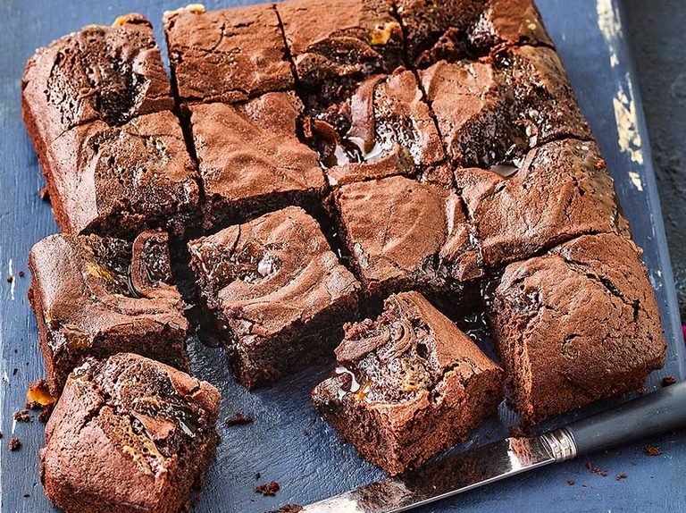

Amazing Brownie Recipie
This is a guide to make an amazing snack to fill your cravings.
Make sure to follow this step by step guide in order to make this recipie
Shopping list
- Eggs
- Butter
- Flour
- Sugar
- Cocoa Powder
- Vanilla extract
- Baking Powder
- Salt
Recipie
This will take appproximately 25 min to cook.
Additionally will need extra 20 min to prep
- Step 1:
- Pre heat the oven to 175 on fan
- Heat up some butter until melted
- Step 2:
- Into a bowl add:
- 1 cup sugar
- 2 whole eggs
- 1 Tea spoon of vanilla extract
- Step 3:
- Into antoher bowl add:
- Half cup flour
- 1/3 cup of cocoa
- Tea spoon of baking powder
- Half tea spoon of salt
- Step 4:
- Now combine both bowls made in step 2&3
- Coof for 25 mins until soft and goeey inside
- Step 5:
- Now place the mixture in a baking tray
- Cook for 25 min until soft and gooey inside
- Step 6:
Find the recipie here
